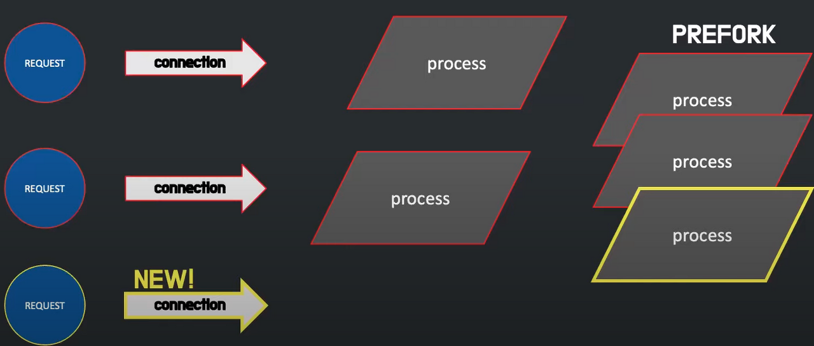
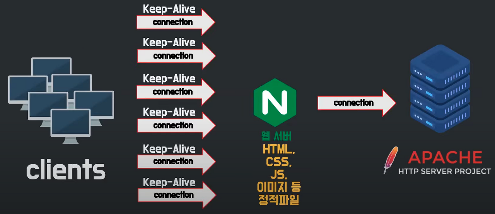

1주차 :: 과제 2
타입스크립트와 자바스크립트
JavaScript1. 웹 개발에 주로 사용됨
2. 웹 페이지를 대화식으로 만드는 프로그래밍 언어
3. 폼 유효성 검사, 애니메이션 적용 및 이벤트 생성을 수행
4. 클라이언트 측 스크립팅 언어
- 사용자가 웹 브라우저를 열고 웹 페이지를 요청하면 해당 요청이 웹 서버로 이동함
5. 멀티 스레딩, 멀티 프로세싱 기능이 없음
TypeScript
1. JavaScript의 상위 집합으로 JavaScript의 모든 기능이 있음
2. TypeScript 컴파일러를 사용하여 ts(TypeScript)파일을 js(JavaScript) 파일로 변환, 쉽게 통합
3. 정적 유형 검사 제공
4. 클래스 기반 객체를 만들 수 있음
5. 클래스 기반이므로 객체 지향 프로그래밍 언어로 상속, 캡슐화 및 생성자를 지원할 수 있음
타입스크립트(TypeScript)는 마이크로소프트(MS)에서 개발한 오픈소스 프로그래밍 언어이며, 자바스크립트(JavaScript)의 단점을 보완하기 위해 만들어졌다. 모든 브라우저, 호스트, 운영체제에서 동작한다.
자바스크립트는 동적 타입 언어(dynamic type language)이기 때문에 런타임 속도는 빠르지만 타입 안정성이 보장되지 않는다. 타입이란 프로그램에서 다룰 수 있는 값의 종류를 의미(string(텍스트), boolean(참/거짓) 등)하는데 타입 안정성이 보장되지 않는다는 것은 이러한 값의 종류가 잘못 전달될 경우(버그)를 잡기 어렵다는 것을 의미한다.
타입스크립트는 정적 타입 언어(static type language)이기 때문에 컴파일 시 시간이 조금 걸리더라도 안정성을 보장한다는 점이 장점이다. 타입스크립트는 타입을 선언한다. 이것은 자바스크립트에서 모호하게 사용되던 타입을 제어할 수 있게 되어 훨씬 더 간편하게 에러를 잡을 수 있게 한다.
타입스크립트는 자바스크립트 환경에서 실행될 수 없다. 브라우저가 타입스크립트를 이해하지 못하기 때문에 자바스크립트로 컴파일 되어야 한다.
런타임 에러 vs 컴파일 에러
javascript (plus.js)
function plus(a,b){
var c = a+b //1.runtime err 발생
return c
}
var a =1
var b ="aa"
console.log("a+b=" +plus(a,b))]
typescript (plus.ts)
function plus(a:number,b:number):number{
var c:number = a+b
return c
}
var a:number =1
var b:number ="aa" // 2. compile err 발생
console.log("a+b=" +plus(a,b))
a와 b의 값을 더한 c의 값을 출력하는 코드이다. 그리고 number와 string을 더하는 오류가 있는 코드이다. javascript의 경우는 runtime에서 에러가 발생한다. 즉, 프로그래밍이 잘 돌다가 '1번 지점'에서 에러가 발생하며 죽는다. typescript의 경우는 compile과정에서 에서 에러가 발생한다. 즉, 프로그램이 돌기도 전에 에러를 출력한다. javascript는 프로그램 잘 돌다가 이유 없이 에러가 뜨는 경우가 많다. 하지만 typescript는 프로그램이 돌다가 죽는 불상사를 미리 예방할 수 있다. 그 이유는 type을 명시함으로써 컴파일 단에서 미리 선언될 수 없는 변수를 차단하기 때문이다.
CI/CD (Continuous Integration/Continuous Delivery)
애플리케이션 개발 단계를 자동화하여 애플리케이션을 더욱 짧은 주기로 고객에게 제공하는 방법이다. CI/CD의 기본 개념은 지속적인 통합, 지속적인 서비스 제공, 지속적인 배포입니다. CI/CD는 새로운 코드 통합으로 인해 개발 및 운영팀에 발생하는 문제(일명 "통합 지옥(integration hell)")를 해결하기 위한 솔루션이다.CI (Continuous Integration)
CI는 지속적 통합이라는 뜻으로 개발을 진행하면서도 품질을 관리할 수 있도록 하는 것으로 여러 명이 하나의 코드에 대해서 수정을 진행해도 지속적으로 통합하면서 관리할 수 있음을 의미한다.
개발자가 직접 코드를 병합하고 빌드, 테스트를 검증하는 것은 시간이 많이 소요될 뿐만 아니라 귀찮고 그 양도 프로젝트의 크기가 커질수록 많아질 수 밖에 없다. 이를 자동화하면 개발자가 빌드와 테스트를 직접 하지 않고도 수정한 코드를 브랜치에 병합하기만 하면 자동으로 빌드와 테스트를 검증할 수 있다. 개발자가 단위별로 구현한 부분을 병합할 때마다 자동화된 빌드와 테스트가 트리거되어 실행된다. 결과를 통해 우리는 어떤 부분에서 문제가 있는지 배포 전에 확인할 수 있고, 배포가 완성된 후에야 버그를 수정할 수 있던 기존의 문제를 빠르고 정확하게 해결할 수 있다.
결과적으로 버그를 신속하게 찾아 해결할 수 있을 뿐 아니라, 소프트웨어 품질을 개선하고 새로운 소프트웨어 업데이트를 검증하고 릴리즈하는데에 걸리는 시간을 단축할 수도 있다.
CD(Continuous Deployment)
CD는 지속적 배포로 소프트웨어가 항상 신뢰 가능한 수준에서 배포될 수 있도록 관리하자는 개념으로 지속적 제공(Continuous Delivery)로 사용되기도 한다. 지속적 제공은 CI를 통해서 새로운 소스코드의 빌드와 테스트 병합까지 성공적으로 진행되었다면, 빌드와 테스트를 거쳐 github과 같은 저장소에 업로드하는 것을 의미한다. 이러한 소스코드를 테스트 가능한 알파나 베타 버전으로 만들며, 이 버전에서 테스트를 수행해 문제가 발생하면 수정한 뒤 정식 버전으로 배포를 진행한다.
테스트 종류와 설명
소프트웨어 테스트의 정의를 한 마디로 표현하면 "주요 이해관계자들에게 시험 대상 제품 또는 서비스의 품질에 관한 정보를 제공"하는 조사 과정이다.테스팅 활동을 수행하면서 도출되는 여러 데이터들로 현재 개발 중인 제품/서비스에 대한 판단 기준을 제공할 수 있다는 의미이다. 이를 통해 소프트웨어 테스트는 소프트웨어에 대한 객관적이고 독립적인 시각을 제공하기도 하며, 사업주체가 소프트웨어 구현의 위험성을 올바로 이해하도록 해줄 수 있다. 시험 기술에는 프로그램이나 응용 프로그램을 실행하여 소프트웨어 버그를 찾는 절차를 포함되나 이에 국한되지는 않는다.
Black Box Testing (블랙 박스 테스팅)
: 블랙 박스 테스팅이란 시스템의 내부 설계를 전혀 고려하지 않는 테스팅으로서 고객의 요구사항 등이 담긴 프로그램 명세서를 기반으로 테스팅된다.
White Box Testing (화이트 박스 테스팅)
: 화이트 박스 테스팅이란 블랙 박스 테스팅과는 다르게 시스템의 내부 설계를 고려한 테스팅으로서 시스템의 코드 내부의 로직에 대한 지식을 기반으로 수행된다. 이 테스팅을 수행하기 위해서는 내부적으로 소프트웨어와 코드가 어떻게 동작하는지 알고 있어야 하며, 커버리지(Coverage)를 통하여 테스팅된다.
테스트 커버리지란 시스템 또는 소프트웨어의 테스트를 논할 때 얼마나 테스트가 충분한가를 나타낸 것이다. 즉, 수행한 테스트가 테스트의 대상을 얼마나 커버했는지를 나타낸다.
unit testing (유닛 테스팅)
: 유닛 테스팅이란 각각의 소프트웨어 컴포넌트나 모듈 대상 테스팅을 의미한다. 일반적으로 테스터가 아니라 프로그래머에 의해 수행되며, 이를 수행하기 위해서는 프로그램 내부에서 수행되는 코드와 프로그램 설계에 대해 매우 해박한 지식을 가지고 있어야 한다.
integration testing (통합 테스팅)
: 통합 테스팅이란 프로그램이 통합된 이후에 결합된 기능들을 검증하기 위한 통합 모듈 테스팅이다. 여기서 모듈은 일반적으로 코드 모듈, 개별 어플리케이션, 네트워크 상의 클라이언트와 서버 애플리케이션 등이 될 수 있다. 이 유형의 테스팅은 특히 클라이언트/서버 및 분산 환경 시스템에 적절하다.
system testing (시스템 테스팅)
: 시스템 테스팅이란 각각의 요구사항에 대해 전체 시스템이 테스트된다. 전체 요구사항 명세에 기반 한 블랙박스 타입의 테스팅으로 모든 조합 가능한 시스템의 부분들을 커버한다.
alpha testing (알파 테스팅)
: 알파 테스팅이란 개발의 마지막 부분에서 수행하는 테스팅으로서 가상의 유저 환경이 조성될 수 있다. 이 테스팅의 결과로 사소한 디자인 변경 등이 이루어 질 수 있다.
beta testing (베타 테스팅)
: 베타 테스팅이란 일반적으로 엔드 유저에 의해 완료되는 테스팅이다. 프로그램 상용화를 위한 애플리케이션 릴리즈 이전의 최종 테스팅을 의미한다.
acceptance testing (인수 테스팅)
: 인수 테스팅이란 일반적으로 개발된 시스템이 고객이 명세한 요구사항을 충족했는지를 검증하기 위해 사용된다. 사용자 혹은 고객이 인수 테스팅을 통한 결과를 보고서 애플리케이션을 인수(Accept) 할 것인지를 결정하기 위해 수행한다.
regression testing (리그레션 테스팅)
: 리그레션 테스팅이란 애플리케이션의 모든 모듈 및 기능에 대한 수정 사항을 테스팅 하는 것이다. 이 테스팅에서는 모든 시스템을 커버하는 것은 무척 어려운 일이므로 일반적으로 자동 테스팅이 사용된다.
클라우드 서버
클라우드 서버는 애플리케이션을 제공하고, 정보를 처리하거나 데이터 스토리지를 제공하는 강력한 물리적 또는 가상 인프라이다. 일부 클라우드 서버는 하나의 물리적 서버를 여러 가상 서버로 분할하는 가상화 소프트웨어를 사용하여 구축된다.클라우드 서버와 기존 서버 간의 주요 차이점은 클라우드 서버가 종종 인터넷과 같은 네트워크를 통해 액세스 가능한 플랫폼에서 여러 사용자 간에 공유될 수 있다는 점이다. 기존(전용) 서버는 지정된 회사 또는 엔터티에서만 액세스한다. 그에 반해 클라우드 서버는 물리적 서버와 동일한 기능을 수행하지만, 사이트에서 설정하고 관리하는 대신 네트워크를 통해 호스트되고 전달된다. 또한, 클라우드 서버는 무제한 컴퓨팅 용량을 제공하지만 물리적 서버는 기존 인프라 또는 컴퓨팅 용량으로 제한된다 차이점이 있다.
Nginx
Nginx란 트래픽이 많은 웹사이트의 서버(WAS)를 도와주는 비동기 이벤트 기반구조의 경량화 웹 서버 프로그램이다. 클라이언트로부터 요청을 받았을 때 요청에 맞는 정적 파일을 응답해주는 HTTP Web Server로 활용되기도 하고, 또는 Reverse Proxy Server로 활용하여 WAS의 부하를 줄일 수 있는 로드밸런서 역할을 하기도 한다.Apache

정적인 데이터를 처리하는 웹 서버중 하나이다. Apache Server 같은 경우 클라이언트의 요청이 들어오면 connection을 생성한다. 그래서 새로운 클라이언트의 요청이 올 때마다 새로운 process를 생성한다. 이떄 프로세스를 생성하는 과정은 시간이 오래 걸리기 때문에 프로세스를 미리 만들어 놓는 PREFORK라는 방식을 이용하며, 새로운 클라이언트의 요청이 오면 미리 만들어 놓은 프로세스를 할당하는 방법을 사용하였다. 만약 만들어 놓은 프로세스가 없다면 추가로 프로세스를 생성한다..
이런 구조 덕분에 개발자는 다양한 모듈을 만들어서 서버에 빠르게 기능을 추가할 수 있었다. 즉, 확장성이 높았고, Apache Server는 동적 컨텐츠를 처리할 수 있게 된 것이다. 확장성이 좋다는 장점은 결국 요청을 받고 응답을 처리하는 과정을 하나의 서버에서 해결하기 좋다는 장점이 있다..
하지만 1999년에 들어오면서 컴퓨터가 많이 보급됨에 따라 요청이 많아져서 서버에 동시에 연결된 connection이 많을 때 더 이상 새로운 connection을 생성하지 못하게 되었다. 이를 C10K(connection 10000 problem)문제라고 하는데 Apache Server는 구조적으로 아래와 같은 문제점이 있었다.
- 메모리 부족: connection이 연결될 때마다 프로세스를 생성
- 무거운 프로그램: 확장성이 좋다는건 곧 리소스가 않다는 걸 의미
- CPU 부하 증가: 많은 connection 요청이 들어오면 context switching을 많이 하기에 CPU 부하가 증가
즉, Apache Server는 현대로 올수록 사용하기 꺼려졌고, 이러한 구조적 문제점을 해결한 Nginx가 2004년에 나왔다. 초창기 Nginx는 Apache와 함께 사용하여 아파치 서버가 지닌 구조적 한계를 Nginx를 사용하면서 극복하려는 목적으로 쓰였다..

수많은 동시 connection을 Nginx가 유지하고, Nginx도 웹 서버이기에 정적 파일에 대한 요청은 스스로 처리하고, 클라이언트로부터 동적 파일의 요청을 받았을 때만 아파치 서버와 connection을 형성하여 아파치 서버의 부하를 줄여나갔다. Nginx는 설정파일을 읽고, 설정에 맞게 worker process를 생성하는 master process가 있는데, worker process는 실제로 일을 하는 프로세스이며 worker process가 만들어질 때 지정된 listen 소켓을 배정 받는다. 그리고 그 소켓에 새로운 클라이언트의 요청이 들어오면 connection을 형성하고 처리한다.
이 이벤트들은 os커널이 queue형식으로 worker process에게 전달된다. 이 이벤트들은 queue에 담긴 상태에서 비동기 상태로 대기한다. 그리고 worker process는 하나의 스레드로 이벤트를 꺼내서 처리해 나간다. 이런 방식은 worker process가 쉬지 않고 일을 하기에, 요청이 없을 때 프로세스를 방치시키는 Apache Server보다 훨씬 효율적으로 자원을 사용할 수 있다.
Apache 방식인 스레드 기반은 하나의 커넥션 당 하나의 스레드를 잡아먹지만 이벤트 기반 방식은 여러 개의 connection을 전부 Event Handler를 통해 비동기 방식으로 처리해 먼저 처리되는 것부터 로직이 진행되게끔 한다.
NGINX 기능 및 모듈을 이용해 다른 프로그램의 도움을 받지않는다고 가정한다면, NGINX는 정적처리만 하는 웹서버가 맞습니다. 하지만 NGINX 기능 및 모듈인 CGI 또는 프록시 기능을 사용한다면 동적 요청을 외부 프로그램에 전달하여 처리하므로 동적처리를 제공한다고도 볼 수 있다. 즉, Apache와 함께 쓰는 것이 아닌 대체해서 쓰는 것이 가능하다
Nginx의 장점
1. 이벤트 중심 접근 방식을 사용하여 클라이언트 요청 제공
2. 제한된 하드웨어 리소스로도 여러 클라이언트 요청을 동시에 효율적으로 처리
3. 단일 스레드를 통해 여러 연결을 처리 가능
4. 최소한의 리소스로 웹 서버의 아키텍처를 개선하기 위해 독립형 HTTP 서버로 배치 가능
Graph-QL과 REST-API
GraphQL은 API를 위한 쿼리 언어(Query Language)이며 타입 시스템을 사용하여 쿼리를 실행하는 서버사이드 런타임이다. GraphQL은 특정한 데이터베이스나 특정한 스토리지 엔진과 관계되어 있지 않으며 기존 코드와 데이터에 의해 대체된다. SQL이 데이터베이스 시스템으로부터 데이터를 가져오는 목적을 가진다면, GraphQL은 클라이언트가 데이터를 서버로부터 가져오는 것을 목적으로 한다.라우터는 라우터에 연결된 모든 기기에 사설 네트워크를 구축해주는 역할을 합니다. 라우터는 사설 네트워크를 구축할 뿐만 아니라 공용 IP를 할당받는데, 이때 라우터에 연결된 기기는 인터넷에 접속하기 위하여 무조건 라우터를 거쳐야 한다. 이때, 가정용 기기를 원격 기기에 직접 연결하고 싶다면, 서버 포트포워딩을 설정해야 합니다.포트포워딩은 가정용 네트워크와 원격 기기 사이를 직접적으로 연결하는 경우에 유용하다.
서버 사이드(server-side)
네트워크의 한 방식인 클라이언트-서버 구조의 서버 쪽에서 행해지는 처리를 말한다. 이는 클라이언트에서 프로그램이 구동되는 클라이언트 사이드와는 대조된다
GraphQL이 REST와 비교해서 가지는 차이점은 크게 다음과 같다.
1. GraphQL은 보통 하나의 엔드포인트를 가진다.
2. GraphQL은 요청할 때 사용하는 쿼리에 따라 다른 응답을 받을 수 있다.
3. GraphQL은 원하는 데이터(response)만 받을 수 있다.
REST API는 보통 여러 엔드포인트를 가지며 각각의 엔드포인트가 동일한 응답을 반환한다. 하지만, GraphQL은 보통 하나의 엔드포인트만을 사용하며 요청하는 쿼리에 따라 다른 응답을 반환하는 방식이다.
GraphQL 장단점
1. HTTP 요청 횟수를 줄일 수 있다.
- RESTful의 경우 필요한 리소스 별로 요청 해야하고, 필요한 데이터들이 부분적으로 나눠서 개발되어 있다면 그만큼 요청 횟수가 늘어난다. 하지만 GraphQL은 원하는 정보를 하나의 쿼리에 모두 담아 요청 할 수 있다.
2. HTTP 응답 사이즈를 줄일 수 있다.
- Restful의 경우 응답의 형태가 정해져있기 때문에 필요한 정보만 부분적으로 요청하는 것이 힘들고, 자연스럽게 데이터의 사이즈가 클 수 밖에 없다. Facebook이 GraphQL을 개발한 초기 이유 중 하나는 모바일 사용의 증가라고 한다. GraphQL을 사용함으로써 응답 데이터 사이즈를 최소화하여 모바일 환경의 부담을 줄일 수 있다.
3. 프론트엔드와 백엔드 개발자의 부담을 덜 수 있다.
-Restful API를 사용한다면 프론트엔드 개발자는 API의 request/response 형식에 의존하게 된다. 따라서 새로운 엔드포인트를 효율적이게 개발하기 위해서는 프론트엔드와 백엔드 개발자의 커뮤니케이션이 강제되는 경우가 많았다.
하지만 GraphQL은 request/response 의존도가 많이 없기 때문에, 개발자들의 API 개발 부담을 덜 수 있다
4. 고정된 요청과 응답만 필요할 때에는 query로 인해 요청의 크기가 Restful보다 커질 수 있다.
5. 캐싱이 REST보다 복잡하다.
6. 파일 업로드 구현 방법이 정해져 있지 않아 직접 구현해야 한다.
워터폴 기법
주문 ➪ 디자인 ➪ 기능구현 ➪ 테스팅 ➪ 배포폭포수(WATERFALL)방법론은 소프트웨어 개발 단계가 위에서 부터 아래로 폭포에서 물이 떨어지듯이 순차적으로 진행된다. 폭포수 방법론은 한단계씩 진행함에 따라 다시 이전 단계로 가지 않고 계속 진행하기에 다음 단계로 가기전에 완벽하게 요구사항을 반영하여 개발했다는 것을 전제로 한다. 수직적으로 진행되기에 각 과정에 대한 이해가 용이하지만 개발 도중에 요구사항이 변경되었을 경우, 추가적인 비용과 시간이 들게 된다.
애자일 기법
"주문 ➪ 디자인 ➪ 기능구현 ➪ 테스팅 ➪ 배포" x ∞'애자일(Agile)'이란 용어는 소프트웨어 개발 방식의 하나로, 작업 계획을 짧은 단위로 세우고 제품을 만들고 고쳐 나가는 사이클을 반복함으로써 고객의 요구 변화에 유연하고도 신속하게 대응하는 개발 방법론이다. 애자일(AGILE)방법론은 폭포수(WATERFALL)방법론과 다르게 소프트웨어 개발 단계를 명확하게 구분하지 않고 각 단계를 반복적으로 수행하면서 진행한다. 이때 요구사항을 추가하거나 제외하면서 소프트웨어를 개발하게 된다.
잦은 요구사항의 변경이나 큰 프로젝트를 맡게 되어 요구사항 분석 및 설계를 완벽하게 하기 어려운 경우, 애자일(AGILE)방법론은 폭포수(WATERFALL)방법론보다 적합한 개발 방법론이 될 수 있다.
익스트림 프로그래밍
애자일 방법론중 하나로 빠른 개발 속도를 유지하며 고객이 원하는 요구들을 지속적으로 피드백하는 방법이다. 빠르게 고객과 소통하며 개발할 수 있는 방법이다. 의사소통, 단순성, 피드백, 용기, 존중을 가치로 내세우고 있다.1. 조금씩, 하지만 자주 발표한다.
2. 사이클을 반복해서 돌리면서 개발한다.
3. 스펙에 없는 것은 절대 집어넣지 않는다.
4. 테스트 코드를 먼저 만든다.
5. 야근은 하지 마라. 항상 정규 일과 시간에만 작업한다.
6. 기회가 생기는 족족 언제 어디서든 코드를 개선한다.
7. 모든 테스트를 통과하기 전에는 어떤 것도 발표하지 않는다.
8. 조금씩 발표하는 것을 기반으로 하여 현실적인 작업 계획을 만든다.
9. 모든 일을 단순하게 처리한다.
10. 두 명씩 팀을 편성하고 모든 사람이 대부분의 코드를 알 수 있도록 돌아가면서 작업한다.